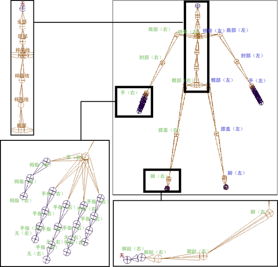
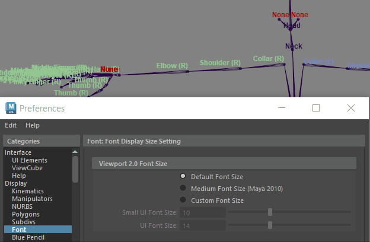

有几种方法来设置骨架关节标签：
- 使用“骨架 > 关节标签设置 > 添加关节标签”(Skeleton > Joint Labelling > Add Joint Labels)可自动为选定关节链中的每个关节或单个选定关节设置标签。请参见自动设置骨架关节标签。
- 选择一个关节并通过“属性编辑器”(Attribute Editor)编辑其标签。请参见调整关节标签。
注：
- 在为关节设置标签时，每个标签会显示在场景视图中各自关节的旁边。如果未在场景视图中看到关节标签，请参见切换关节标签的可见性。
- 如果关节标签太小，请使用“首选项”(Preferences)窗口的“字体”(Font)部分（(Preferences > Font > Viewport 2.0 Font Size > Custom Font Size > UI Font Size)）中的选项调整关节标签文本大小。

使用“首选项 > 自定义字体大小”(Preferences > Custom Font Size)可显示较大的关节标签
自动设置骨架关节标签
自动设置骨架肢体关节的标签
对于源和目标骨架的肢体，请执行以下操作：
- 选择“骨架 > 关节标签设置 > 显示所有标签”(Skeleton > Joint Labelling > Show All Labels)。
关节标签将显示在场景视图中。请参见“骨架 > 关节标签设置 > 显示所有标签”(Skeleton > Joint Labelling > Show All Labels)。
- 选择“骨架 > 关节标签设置 > > 添加关节标签”(Skeleton > Joint Labelling > Add Joint Labels)。
- 在场景视图中，选择骨架中每个肢体（关节链）的父/顶部关节，并执行以下操作：
- 选择“骨架 > 关节标签设置 > 添加关节标签”(Skeleton > Joint Labelling > Add Joint Labels)，然后选择“添加关节标签”(Add Joint Labels)菜单中的“侧”(side)标签（“设置中心标签”(Label Center)、“设置左侧标签”(Label Left)、“设置右侧标签”(Label Right)）。
- 选择“骨架 > 关节标签设置 > 添加关节标签”(Skeleton > Joint Labelling > Add Joint Labels)，然后选择“类型”(type)标签（“设置手臂标签”(Label Arm)或“设置腿部标签”(Label Leg)）。
各关节将依照其在各自关节链中的位置，从选定父关节到关节链层次进行标签设置。
例如，如果选择骨架的左肩关节，并单击“添加关节标签”(Add Joint Labels)菜单中的“设置左侧标签”(Label Left)，再单击“设置手臂标签”(Label Arm)，该关节将被标签为肩部（左），关节链中的下一个关节将被标签为肘部（左），同时下一个关节将被标签为手（左）标签，以此类推。
注：
对于手臂，前臂关节将被设置肘部关节标签。对于腿部，踝部关节将被设置脚关节标签。
- 如果要调整或更改关节标签，请参见调整关节标签。
调整关节标签
从“属性编辑器”(Attribute Editor)设定或调整单个关节标签
- 选择要更改标签的源或目标骨架中的关节，并打开“属性编辑器”(Attribute Editor)。
- 在“关节”(joint)节点选项卡的关节 (Joint)部分，展开“关节映射”(Joint Mapping)。
将显示“侧”(Side)和“类型”(Type)下拉菜单。
- 根据需要设定或更改关节的“侧”(Side)和“类型”(Type)标签。
- 使用“首选项”(Preferences)窗口的“字体”(Font)部分中的“UI 字体大小”(UI Font Size)选项调整总体关节标签文本大小。